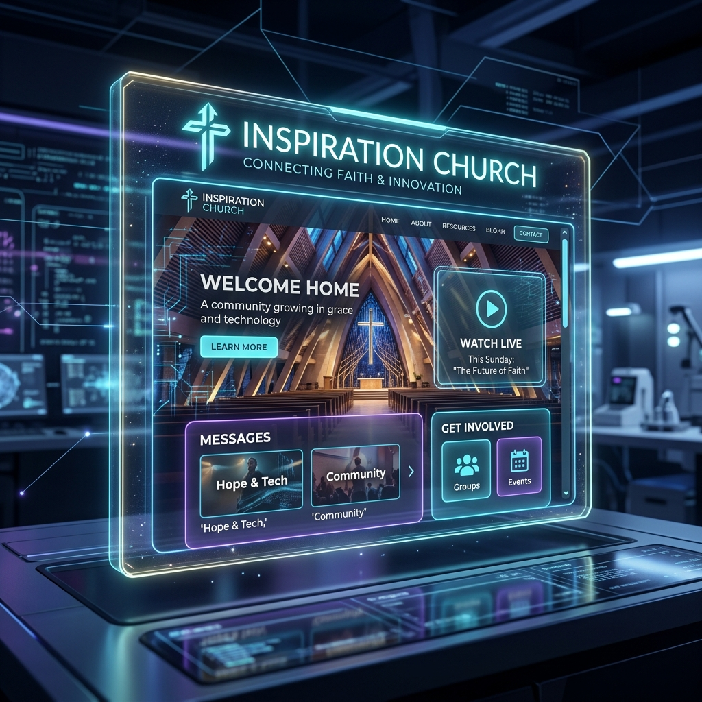
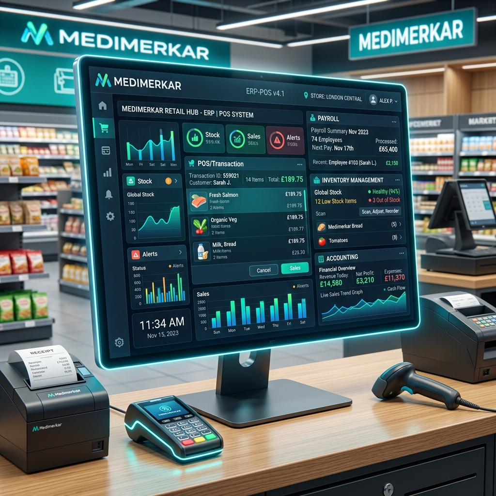

Proyectos Destacados
Portal Web - Inspiration Church

Diseño y desarrollo integral de la plataforma web oficial de la organización comunitaria "Inspiration Church". El proyecto consta de dos grandes componentes: un sitio público informativo (eventos, blogs, transmisión multimedia) y un portal de ingreso privado (intranet) exclusivo para los miembros activos...
Sistema POS y ERP integral - Medimerkar

Desarrollo de un sistema de Punto de Venta (POS) y automatización de procesos para la cadena de supermercados "Medimerkar"...
Educonnect - Sistema de gestión de aprendizaje

Desarrollo de una plataforma educativa web diseñada para instituciones medianas. Permite la creación de cursos, carga de material multimedia, entrega de tareas y cuenta con un módulo de comunicación en vivo (chats y foros de discusión) para fomentar la interacción entre estudiantes y profesores...